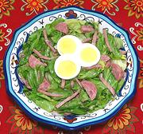

|
Escarole Salad with Tuna, SausageSpain - Catalonia - Ensalada de Escarola con Aton y Butafarra | ||||
| Serves: Effort: Sched: DoAhead: |
5 salad ** 30 min Most |
An unusual, delicious and very much non-vegetarian salad from Catalonia. This salad is fairly durable on the buffet table and can be made ahead up to dressing the greens. | |||
|
|
------ 12 4 2 1/4 4 8 ------ 1/3 1/4 1/4 ------ 2 |
--- oz oz c oz --- c c t --- |
-- Salad Escarole Scallions Cured Ham (1) Tuna, chunk (2) Butifarrita (3) Anchovy fillet (4) -- Dressing Olive Oil ExtV Wine Vinegar, red Salt (5) -- Garnish Eggs, hard boiled |
Do Ahead - (1 hr - 10 min work)
|